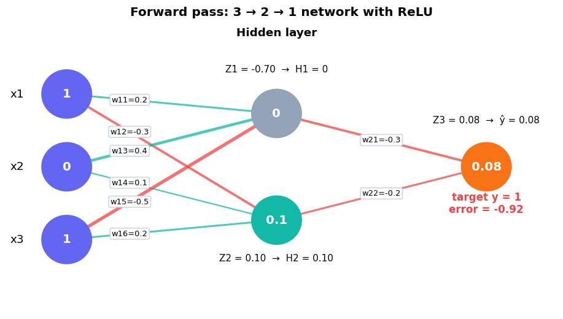

Name: Edrian C. Jugan
Task 2: Forward Pass and Error#
📌 Problem Statement#
Instruction: Perform a single forward pass and compute for the error.
Given
Item |
Value |
|---|---|
Input |
\(x = \begin{bmatrix}1\\0\\1\end{bmatrix}\) |
Target output |
\(y = [1]\) |
Activation |
\(f = \max(0, Z_n)\) (ReLU) |
Hidden unit weights |
\(w_{11}=0.2,\; w_{12}=-0.3,\; w_{13}=0.4,\; w_{14}=0.1,\; w_{15}=-0.5,\; w_{16}=0.2\) |
Output unit weights |
\(w_{21}=-0.3,\; w_{22}=-0.2\) |
Biases |
\(\theta_1=-0.4,\; \theta_2=0.2,\; \theta_3=0.1\) |
🧠 The Plan#
The network has 3 inputs → 2 hidden units → 1 output. Column 1 of the hidden weight matrix feeds \(H_1\) and column 2 feeds \(H_2\).
Step |
Formula |
|---|---|
1. Hidden weighted sums |
\(Z_1 = w_{11}x_1 + w_{13}x_2 + w_{15}x_3 + \theta_1\) and \(Z_2 = w_{12}x_1 + w_{14}x_2 + w_{16}x_3 + \theta_2\) |
2. Hidden activations |
\(H_1 = \max(0, Z_1)\) and \(H_2 = \max(0, Z_2)\) |
3. Output |
\(Z_3 = w_{21}H_1 + w_{22}H_2 + \theta_3\) and \(\hat{y} = \max(0, Z_3)\) |
4. Error |
\(\delta = \hat{y} - y\), squared error \(=(y-\hat{y})^2\), loss \(E=\tfrac{1}{2}(\hat{y}-y)^2\) |
import numpy as np
import matplotlib.pyplot as plt
# consistent look for every plot in this notebook
plt.rcParams.update({
"figure.dpi": 110, "axes.grid": True, "grid.alpha": 0.25,
"axes.spines.top": False, "axes.spines.right": False,
"axes.titleweight": "bold", "font.size": 11,
})
TEAL, INDIGO, RED, ORANGE, GREY = "#14b8a6", "#6366f1", "#ef4444", "#f97316", "#94a3b8"
🔧 Setup#
# input and target
x = np.array([1, 0, 1])
y = np.array([1])
# hidden unit weights (3 inputs x 2 hidden units)
W_h = np.array([[ 0.2, -0.3], # w11, w12
[ 0.4, 0.1], # w13, w14
[-0.5, 0.2]]) # w15, w16
# output unit weights (2 hidden units x 1 output)
W_o = np.array([[-0.3], # w21
[-0.2]]) # w22
# biases: theta1, theta2 (hidden layer) and theta3 (output layer)
theta = np.array([-0.4, 0.2, 0.1])
# activation function f = max(0, Z)
def relu(z):
return np.maximum(0, z)
Step 3️⃣ Output layer#
Z3 = (W_o[0, 0] * H[0]) + (W_o[1, 0] * H[1]) + theta[2]
y_hat = relu(Z3)
print(f"Z3 = {Z3:.4f}")
print(f"y_hat = {y_hat:.4f}")
Z3 = 0.0800
y_hat = 0.0800
Step 4️⃣ Compute the error#
error = y_hat - y[0]
squared_error = (y[0] - y_hat) ** 2
loss = 0.5 * squared_error
print("+---------------------------------+------------+")
print("| Quantity | Value |")
print("+---------------------------------+------------+")
print(f"| Actual output (y) | {y[0]:>10.4f} |")
print(f"| Predicted output (y_hat) | {y_hat:>10.4f} |")
print(f"| Error (y_hat - y) | {error:>10.4f} |")
print(f"| Squared error | {squared_error:>10.4f} |")
print(f"| Loss E = 1/2 * squared error | {loss:>10.4f} |")
print("+---------------------------------+------------+")
+---------------------------------+------------+
| Quantity | Value |
+---------------------------------+------------+
| Actual output (y) | 1.0000 |
| Predicted output (y_hat) | 0.0800 |
| Error (y_hat - y) | -0.9200 |
| Squared error | 0.8464 |
| Loss E = 1/2 * squared error | 0.4232 |
+---------------------------------+------------+
🎨 Visualizing the forward pass#
Blue-green lines are positive weights, red lines are negative weights (thicker = larger). The grey node is the ReLU unit that was switched off.
from matplotlib.patches import Circle
def draw_network():
fig, ax = plt.subplots(figsize=(10.5, 5.6))
ax.set_xlim(0, 11); ax.set_ylim(0.2, 6.2); ax.axis("off"); ax.grid(False)
pos = {"x1": (1.2, 4.7), "x2": (1.2, 3.2), "x3": (1.2, 1.7),
"h1": (5.4, 4.3), "h2": (5.4, 2.1), "o": (9.6, 3.2)}
edges = [("x1", "h1", 0.2, .30), ("x1", "h2", -0.3, .30), ("x2", "h1", 0.4, .30),
("x2", "h2", 0.1, .30), ("x3", "h1", -0.5, .30), ("x3", "h2", 0.2, .30),
("h1", "o", -0.3, .50), ("h2", "o", -0.2, .50)]
names = {("x1","h1"): "w11", ("x1","h2"): "w12", ("x2","h1"): "w13", ("x2","h2"): "w14",
("x3","h1"): "w15", ("x3","h2"): "w16", ("h1","o"): "w21", ("h2","o"): "w22"}
for a, b, w, t in edges:
(x0, y0), (x1_, y1) = pos[a], pos[b]
ax.plot([x0, x1_], [y0, y1], color=TEAL if w > 0 else RED, lw=1 + 5 * abs(w), alpha=.75, zorder=1)
ax.text(x0 + t * (x1_ - x0), y0 + t * (y1 - y0), f"{names[(a, b)]}={w}", fontsize=8.5, ha="center", va="center",
bbox=dict(boxstyle="round,pad=0.2", fc="white", ec="#cbd5e1"), zorder=3)
vals = {"x1": x[0], "x2": x[1], "x3": x[2], "h1": H[0], "h2": H[1], "o": y_hat}
cols = {"x1": INDIGO, "x2": INDIGO, "x3": INDIGO, "h1": GREY, "h2": TEAL, "o": ORANGE}
for k, (px, py) in pos.items():
ax.add_patch(Circle((px, py), 0.5, color=cols[k], zorder=4))
ax.text(px, py, f"{vals[k]:g}", color="white", ha="center", va="center", fontsize=13, fontweight="bold", zorder=5)
for k, lab in [("x1", "x1"), ("x2", "x2"), ("x3", "x3")]:
ax.text(pos[k][0] - 0.85, pos[k][1], lab, ha="right", va="center", fontsize=12)
ax.text(5.4, 5.9, "Hidden layer", ha="center", fontsize=12, fontweight="bold")
ax.text(pos["h1"][0], pos["h1"][1] + 0.85, f"Z1 = {Z_h[0]:.2f} → H1 = {H[0]:.0f}", ha="center", fontsize=10)
ax.text(pos["h2"][0], pos["h2"][1] - 0.85, f"Z2 = {Z_h[1]:.2f} → H2 = {H[1]:.2f}", ha="center", fontsize=10)
ax.text(pos["o"][0], pos["o"][1] + 0.9, f"Z3 = {Z3:.2f} → ŷ = {y_hat:.2f}", ha="center", fontsize=10)
ax.text(pos["o"][0], pos["o"][1] - 0.95, f"target y = {y[0]}\nerror = {error:.2f}", ha="center", fontsize=11, color=RED, fontweight="bold")
ax.set_title("Forward pass: 3 → 2 → 1 network with ReLU")
plt.show()
draw_network()

🔍 Exact verification (no rounding)#
Floating point numbers can hide tiny rounding errors, so here is the same forward pass done with exact fractions.
from fractions import Fraction as F
x_f = [F(1), F(0), F(1)]
Wh_f = [[F('0.2'), F('-0.3')], [F('0.4'), F('0.1')], [F('-0.5'), F('0.2')]]
Wo_f = [F('-0.3'), F('-0.2')]
th_f = [F('-0.4'), F('0.2'), F('0.1')]
relu_f = lambda z: max(F(0), z)
Z_f = [sum(x_f[i] * Wh_f[i][j] for i in range(3)) + th_f[j] for j in range(2)]
H_f = [relu_f(z) for z in Z_f]
Z3_f = sum(H_f[j] * Wo_f[j] for j in range(2)) + th_f[2]
yh_f = relu_f(Z3_f)
err_f = yh_f - 1
for name, v in [("Z1", Z_f[0]), ("Z2", Z_f[1]), ("H1", H_f[0]), ("H2", H_f[1]),
("Z3", Z3_f), ("y_hat", yh_f), ("error", err_f), ("squared error", err_f**2), ("loss", err_f**2 / 2)]:
print(f"{name:<14} = {str(v):>8} = {float(v):.4f}")
Z1 = -7/10 = -0.7000
Z2 = 1/10 = 0.1000
H1 = 0 = 0.0000
H2 = 1/10 = 0.1000
Z3 = 2/25 = 0.0800
y_hat = 2/25 = 0.0800
error = -23/25 = -0.9200
squared error = 529/625 = 0.8464
loss = 529/1250 = 0.4232
✅ Final Answer#
Quantity |
Value |
|---|---|
\(Z_1\) |
\(-0.7\) |
\(H_1 = f(Z_1)\) |
\(0\) |
\(Z_2\) |
\(0.1\) |
\(H_2 = f(Z_2)\) |
\(0.1\) |
\(Z_3\) |
\(0.08\) |
Predicted output \(\hat{y} = f(Z_3)\) |
0.08 |
Error \(\hat{y} - y\) |
−0.92 |
Squared error \((y-\hat{y})^2\) |
0.8464 |
Loss \(\tfrac12(y-\hat{y})^2\) |
0.4232 |
The network predicts \(0.08\) while the target is \(1\), so it is under-predicting by \(0.92\). This is expected with the starting weights, and it is exactly what backpropagation (Task 3) will start correcting.